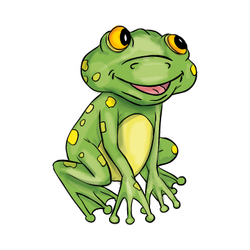
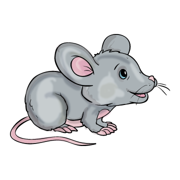
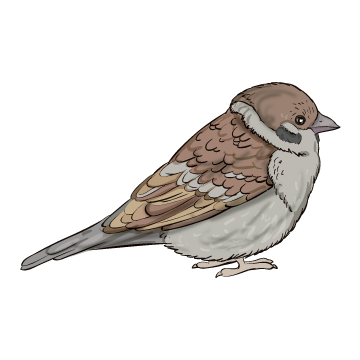

Mi tör-tént, mi-u-tán es-ni kez-dett az eső?
1. Hullt a hó.
2. Az á-rok te-le lett víz-zel.
3. Har-ma-tos lett a rét.
Mit ke-res-tek a kis ál-la-tok?
1. ha-jót
2. haj-lé-kot
3. le-tört fát
Ki tar-tot-ta a híd kö-ze-pét?
1. 
2. 
3. 